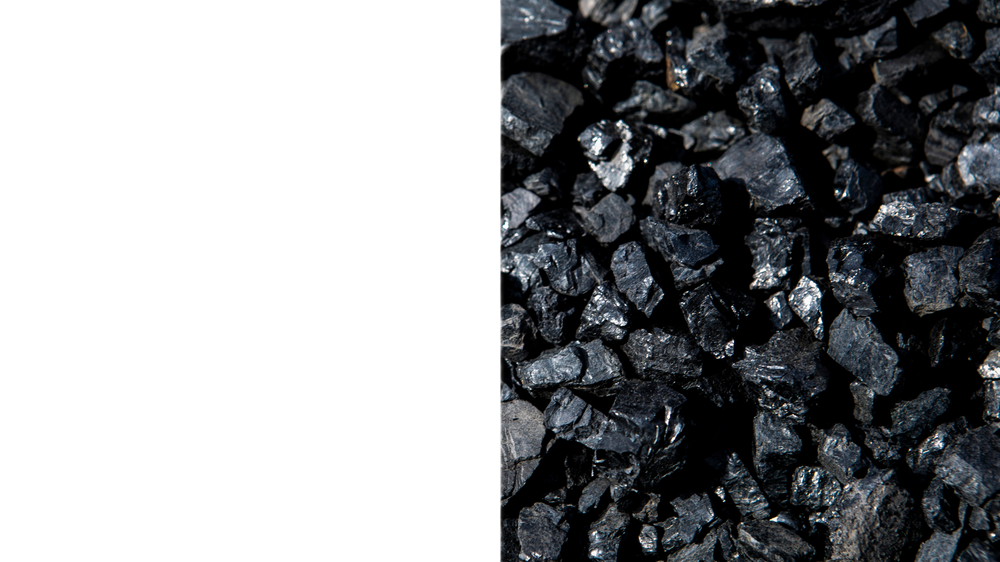
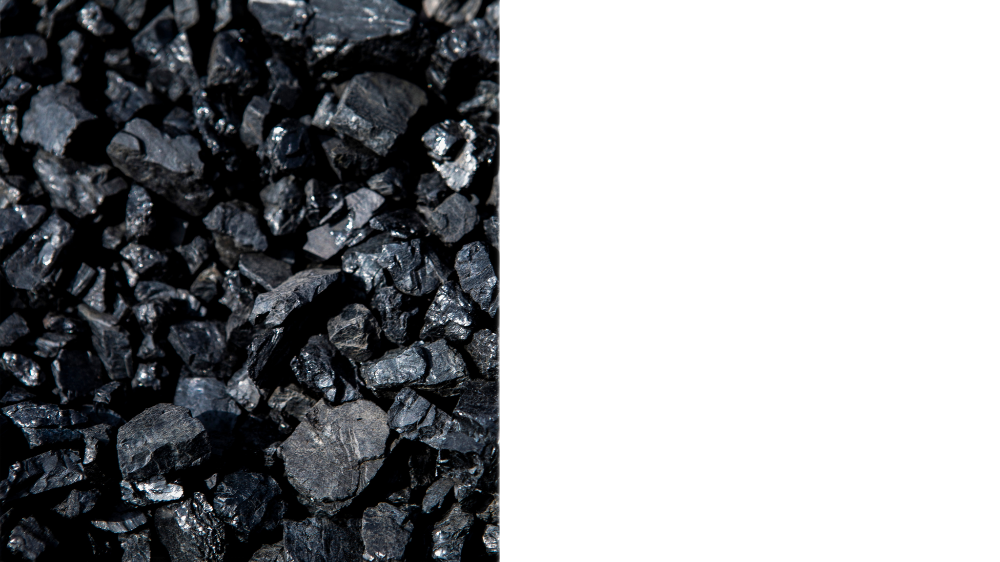
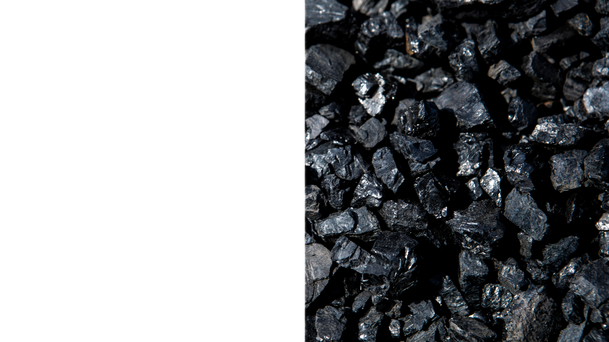
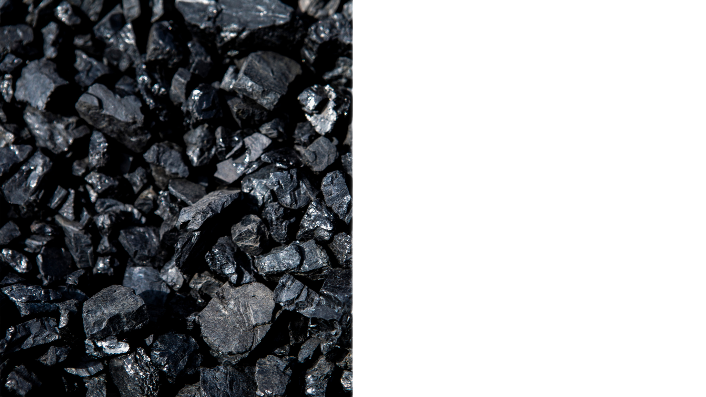
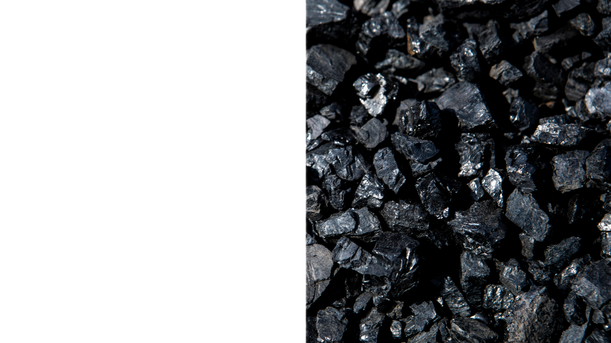
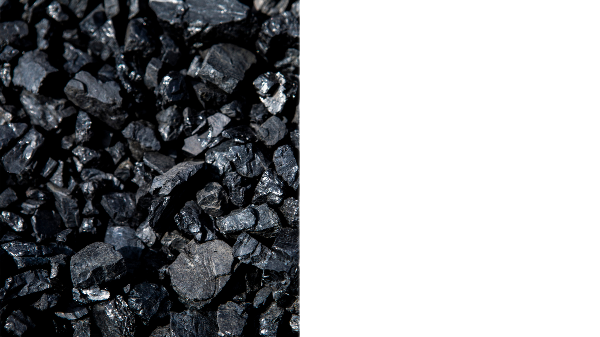
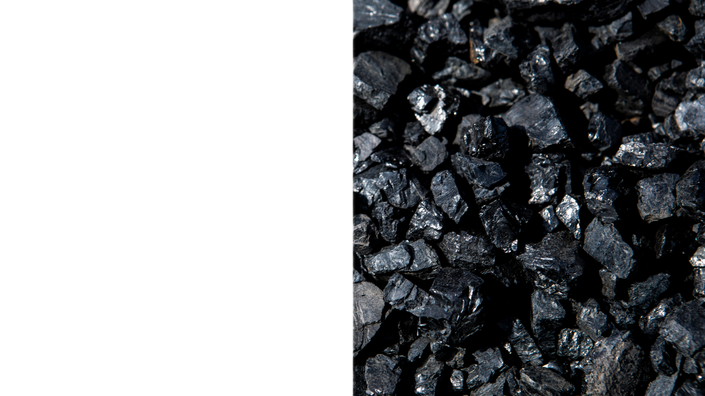
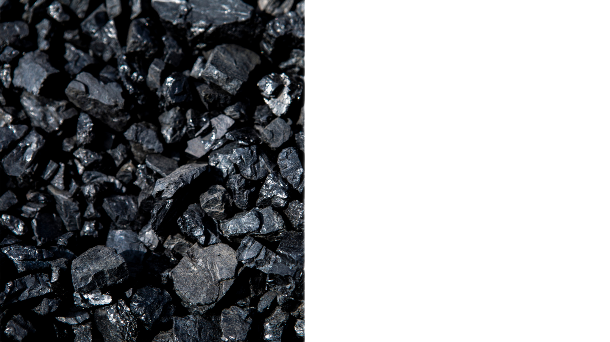

Linyit kömürü, yüzyıllardır insanlığın enerji ihtiyaçlarını
karşılamada kullanılan önemli bir doğal
kaynaktır. Bu eşsiz
kömür türü, düşük kalorili yapısıyla bilinirken, enerji üretiminde
geniş kullanım
alanlarına sahiptir. Linyit, termal enerji
üretiminde ve sanayi sektöründe yoğun olarak kullanılarak
elektrik üretimine ve işletmelere güç sağlar. Aynı zamanda yerel
ekonomilere katkı sağlayan linyit
madenciliği, istihdam yaratma
ve yerel gelişimi teşvik etme konusunda da önemli bir role sahiptir.
Ancak linyit kömürünün düşük kalorili yapısı ve yüksek emisyon
potansiyeli, çevresel
sürdürülebilirlik açısından da dikkate
alınmalıdır. Gelecekteki enerji stratejileri ve çevresel bilinç,
linyit kömürünün kullanımını şekillendirmektedir. Bu yazı,
linyit kömürünün insan hayatındaki yerini
anlamak ve potansiyel
avantajları ile zorlukları değerlendirmek isteyenler için
bilgilendirici bir kaynaktır.

Taşkömürü, milyonlarca yıl süren doğal bir dönüşüm sürecinin sonucunda
oluşmuş olan değerli bir
enerji ve endüstri kaynağıdır.
Yeryüzünde varlığı binlerce yıl öncesine dayanan bitki kalıntıları,
yer
altında yüksek sıcaklık ve basınç altında yavaşça dönüşerek
taşkömürünü oluşturmuştur. Bu doğal
süreç, bitkilerin zamanla
toprak altında birikmesi ve ağır yükler altında ezilmesiyle başlar.
Yıllar
geçtikçe, bu kalıntılar yüksek basınç ve sıcaklığa maruz
kalarak kimyasal ve fiziksel değişimler
geçirir. Bu süreç
sonucu, bitki materyali su ve gazlarını kaybederken karbon içeriği
artar, sonuçta
da taşkömürü oluşur.
Taşkömürü, yüksek karbon içeriğine sahip olması nedeniyle yüksek
ısı üretir. Bu ısı üretimi, enerji
üretimi, ısıtma ve
endüstriyel işlemler için son derece değerlidir. Termik santrallerde
elektrik
üretmek, evleri ve işletmeleri ısıtmak için yaygın
olarak kullanılır. Bununla birlikte, taşkömürü
metalurji, kimya
endüstrisi ve seramik üretimi gibi sektörlerde de önemli bir rol
oynar. Özellikle
yüksek sıcaklık gerektiren metal eritme ve
dökme işlemlerinde tercih edilir.
Taşkömürünün ekonomik değeri büyüktür. Birçok ülkenin enerji
üretiminde ve endüstriyel
faaliyetlerinde ana kaynaklardan
biridir. Ancak, taşkömürünün kullanımı çevresel etkileri de
beraberinde getirir. Kömür madenciliği doğal yaşam alanlarını
etkileyebilir, hava kalitesini
düşürebilir ve sera gazlarının
salınımına neden olabilir. Bu nedenle, sürdürülebilir enerji
kaynaklarına yönelme ve çevresel etkileri azaltma konuları da
büyük önem taşır.
Sonuç olarak, taşkömürü doğanın uzun süreçlerinin ürünüdür ve
insanlık için önemli bir enerji ve
endüstri kaynağıdır. Ancak,
kullanımıyla beraberinde gelen çevresel sorunlar da göz önünde
bulundurulmalıdır. Gelecekte, enerji üretiminde ve endüstride
daha temiz ve sürdürülebilir
çözümler arayışı, taşkömürünün
rolünü şekillendirebilir ve çevresel etkilerini minimize etmeye
yardımcı olabilir.
Antrasit kömür, kömür ailesinin en yüksek karbon içeriğine sahip ve en
saf türlerinden biri olarak bilinir.
Kömürün milyonlarca yıl süren doğal evrim sürecinin sonucu olarak,
yüksek sıcaklık ve basınç altında uzun süre maruz kaldığı için
antrasit, yüksek derecede metamorfize olmuştur.
Bu özellikleri, antrasitin diğer kömür çeşitlerine kıyasla daha yüksek
ısı değeri,
düşük nem içeriği ve daha az uçucu madde içermesiyle
sonuçlanmıştır.
Antrasitin genel bileşimi, karbonun %90'ın üzerine çıktığı bir
seviyeye kadar yükselebilir.
Bu yoğun karbon içeriği, antrasitin mükemmel yanma özellikleri ile
sonuçlanır.
Düşük nem içeriği, yanma sırasında daha az enerjinin buharlaşma
işlemine harcanmasını sağlar, böylece daha fazla ısı üretir.
Ayrıca, antrasitin içerdiği uçucu maddeler nispeten düşüktür, bu da
daha az duman, kül ve gaz emisyonu anlamına gelir.
Bu faktörler, antrasitin özellikle ısıtma amaçlı kullanımında cazip
bir seçenek olmasını sağlar.
Antrasitin kullanım alanları oldukça geniştir.
Isıtma amacıyla kullanıldığında, daha yüksek ısı üretimi ve daha az
atık üretimi sağladığı için çeşitli ısınma sistemlerinde tercih
edilir.
Aynı zamanda metalurji endüstrisinde de kullanılarak demir
cevherlerinin dökümünde ve çelik üretiminde yüksek sıcaklık gerektiren
süreçlerde yakıt olarak kullanılır.
Kimya sanayinde de antrasit, özellikle kimyasal reaksiyonların ve
sentezlerin gerçekleştiği yüksek sıcaklıkta proseslerde enerji kaynağı
olarak tercih edilir.
Bununla birlikte, antrasitin sürdürülebilir enerji kaynaklarına
yönelik bir seçenek olarak artan ilgi göstermesinin arkasında çevresel
faktörler de bulunmaktadır.
Düşük emisyon salınımı ve yüksek verimliliği nedeniyle, antrasit çevre
dostu bir yakıt olarak kabul edilir.
Ancak, antrasitin nadir bulunması ve madencilik işleminin diğer kömür
türlerine göre daha zorlu ve maliyetli olması, onun daha sınırlı bir
kaynak olarak görülmesine neden olur.
Sonuç olarak, antrasit kömür, yüksek karbon içeriği, düşük nem oranı,
yüksek ısı değeri ve çeşitli endüstriyel uygulamalarda kullanım
potansiyeli gibi özellikleriyle dikkat çeken bir kömür türüdür.
Hem ısıtma amaçlı enerji üretimindeki etkinliği hem de çevre dostu
özellikleri, antrasiti enerji üretiminde alternatif bir seçenek olarak
ön plana çıkarmaktadır.
Carbonado, kömür ailesinin sıra dışı üyelerinden biri olarak, diğer
elmas türlerinden belirgin bir şekilde farklılaşan bir yapıya sahip
olan nadir bir kömür çeşididir.
Genellikle siyah veya gri renkte
bulunan carbonado, mikroskobik boyuttaki elmas kristallerinin karbon
matris içinde dağınık bir şekilde yer aldığı benzersiz bir iç yapıya
sahiptir.
Carbonado'nun oluşumu ve özellikleri, henüz tam olarak
anlaşılmış değildir ve bilim insanlarının hala üzerinde çalıştığı bir
alan olarak öne çıkar. Geleneksel elmaslarla karşılaştırıldığında,
carbonado'nun kristal yapısı oldukça farklıdır. Geleneksel elmaslarda
düzenli ve belirgin bir kristal yapısı görülürken, carbonado'da elmas
kristalleri daha rastgele ve dağınık bir şekilde bulunur. Bu durum,
carbonado'nun sertlik, parlaklık ve optik özelliklerinin geleneksel
elmaslardan farklı olabileceği anlamına gelir. Carbonado'nun nadir
bulunması ve benzersiz yapısı, onu mücevherat endüstrisinde özel bir
konuma getirir. Özellikle koleksiyoncular ve mücevher meraklıları
arasında, carbonado'dan yapılan takılar ve mücevherler büyük ilgi
görmektedir. Aynı zamanda, carbonado'nun endüstriyel uygulamalarda
kullanımı da önemlidir. Endüstriyel kesim ve materyal işleme
uygulamalarında kullanılan elmas takımların üretiminde carbonado
kömürü kullanılır. Carbonado'nun oluşum süreci hala gizemini
korumaktadır. Bazı teoriler, yer altı patlamaları veya meteor
çarpmaları gibi ani ve şiddetli olayların, carbonado'nun eşsiz
yapısının oluşumunda etkili olabileceğini öne sürmektedir. Ancak, bu
teoriler hala araştırma gerektiren açıklamalar niteliğindedir. Sonuç
olarak, carbonado kömür, nadir ve ilginç yapısıyla kömür ailesinde
özel bir yere sahip olan bir türdür. Mikroskobik elmas kristallerinin
karbon matris içinde dağınık olarak bulunduğu bu kömür türü,
mücevherat ve endüstriyel kesim gibi alanlarda kullanım potansiyeli
taşır. Oluşumu ve özellikleri hala gizemini korumakla birlikte,
carbonado'nun doğası ve oluşumu üzerine yapılan araştırmalar, bu nadir
kömür türünün sırrını aydınlatmayı amaçlamaktadır.